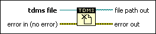
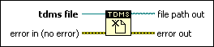

TDMS Close Function
Owning Palette: TDM Streaming VIs and Functions
Requires: Base Development System
Closes the .tdms file you opened with the TDMS Open function.

 Add to the block diagram Add to the block diagram |
 Find on the palette Find on the palette |
Owning Palette: TDM Streaming VIs and Functions
Requires: Base Development System
Closes the .tdms file you opened with the TDMS Open function.

| Add to the block diagram |
Find on the palette |
 |
tdms file specifies a reference number to the .tdms file on which to perform the operation. Use the TDMS Open function to open the refnum. |
 |
error in describes error conditions that occur before this node runs. With the following exception, this input provides standard error in functionality.
This node runs normally even if an error occurred before this node runs. |
 |
file path out returns the path of the .tdms file on which you performed the operation. |
 |
error out contains error information. This output provides standard error out functionality. |
(VxWorks) LabVIEW loads the shared TDMS component into memory when you open a TDMS file. LabVIEW unloads this component from memory when you close all TDMS files. On the VxWorks operating system, unloading the TDMS component from memory will leak approximately 1.8 kilobytes of memory due to a known issue of VxWorks. You can follow the guidelines below to avoid memory leak in your application.
For information on how to access files such as ni-rt.ini on your RT target, refer to the KnowledgeBase on ni.com.
Refer to the following VIs for examples of using the TDMS Close function:
 Open example Find related examples
Open example Find related examples
Open example Find related examples